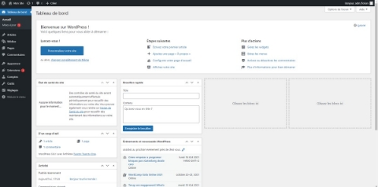

Dans ce tutoriel, nous allons voir comment installer WordPress facilement sur son serveur Web LAMP : Linux, Apache, MariaDB (MySQL) et PHP. Ce guide vous aidera étape par étape pour installer WordPress correctement.
II . L'archive d'installation de WordPress
Positionnez-vous dans le dossier "/tmp" et téléchargez la dernière version de WordPress :
cd /tmp
wget https://wordpress.org/latest.zip
Voilà, laissez le téléchargement s'effectuer... Nous allons utiliser cette archive dans une prochaine étape.
III. Créer une base de données pour WordPress
Que ce soit avec MariaDB ou MySQL, vous pouvez vous connecter à la console de votre instance avec la commande suivante :
mysql –u root –p
Saisissez le mot de passe "root" de votre instance : une console va s'ouvrir, prête à recevoir des commandes SQL.
Première étape : la création de la base de données. Ne donnez pas un nom trop évident, mais parlant malgré tout, par exemple cela peut être : wp202110_itconnect. Ce nom reste parlant pour vous : on sait qu'il s'agit de la base de données WordPress (wp), créée en octobre 2021 pour le site "itconnect".
CREATE DATABASE wp202110_itconnect;
# Retour dans la console :
Query OK, 1 row affected (0.001 sec)
Vous pouvez lister les bases de données de votre instance avec la commande suivante :
SHOW DATABASES;
On peut voir que notre base de données apparaît bien dans la liste :
Deuxième étape : créer l'utilisateur qui sera administrateur de la base de données WordPress. Cet utilisateur sera nommé "adminwp202110_itconnect" et il aura comme mot de passe "Votre-Super-Mot-De-Passe".
Ce qui donne la requête SQL suivante :
CREATE USER 'adminwp202110_itconnect'@'localhost' IDENTIFIED BY 'Votre-Super-Mot-De-Passe';
Troisième étape : donner tous les droits à l'utilisateur "adminwp202110_itconnect" sur la base de données WordPress. Notre serveur Web et la base de données étant sur le même serveur, nous allons donner ces droits pour une connexion locale. Ce qui donne :
GRANT ALL PRIVILEGES ON wp202110_itconnect.* TO adminwp202110_itconnect@localhost;
Enfin, il faut exécuter la commande suivante pour actualiser les droits et activer les nouveaux privilèges sur notre base de données :
FLUSH PRIVILEGES ;
La base de données pour WordPress est prête. Pour le moment elle est vide, mais WordPress va créer sa structure de tables lors de l'installation. Quittez la console MariaDB / MySQL :
exit
Passons à l'étape suivante.
IV. Décompresser l'archive WordPress à la racine du site
Nous allons utiliser le site par défaut d'Apache, qui a pour racine "/var/www/html" afin de stocker les données de notre site WordPress. Au préalable, on supprime la page d'index créée par défaut par Apache :
sudo rm /var/www/html/index.html
Ensuite, on installe le paquet « zip » sur notre serveur pour pouvoir décompresser l’archive de WordPress :
sudo apt-get update
sudo apt-get install zip
On décompresser l'archive dans "/var/www/html" grâce à la commande suivante (en étant positionné dans le dossier où l'on a téléchargé le fichier latest.zip) :
sudo unzip latest.zip -d /var/www/html
L'option "-d" permet de définir là où sera décompressée l'archive. Le dossier WordPress apparaitra donc dans "/var/www/html" qui est le dossier où sont stockées les pages web par défaut.
Le problème, c'est que là on vient de décompresser le contenu de l'archive ZIP dans un dossier nommé "wordpress", ce qui donne : /var/www/html/wordpress. Du coup, pour accéder à notre site, il faudra faire : http://domaine.fr/wordpress/. Ce n'est pas top, nous allons corriger cela dès maintenant.
Déplacez-vous dans le dossier "/var/www/html" :
cd /var/www/html
Ensuite, exécutez la commande ci-dessous pour déplacer tout le contenu du dossier "wordpress" à la racine de notre site :
sudo mv wordpress/* /var/www/html/
Puisque le dossier "wordpress" ne sert plus à rien, on va le supprimer :
sudo rm wordpress/ -Rf
Enfin, on termine en donnant les droits à l'utilisateur "www-data" (correspondant à Apache) sur tous les fichiers de notre site, de manière récursive :
sudo chown -R www-data:www-data /var/www/html/
On obtient une belle liste de fichiers et dossiers. Au niveau des droits et pour des raisons de sécurité, vous devez avoir 755 sur les dossiers et 644 sur les fichiers. Ce qui est le cas par défaut si vous n'avez pas fait de modifications. En aucun cas vous ne devez poser des droits "777" sur un dossier ou un fichier.
Si vous avez un doute ou que vous pensez avoir modifié les droits, vous pouvez rectifier la situation.
Pour les fichiers, exécutez cette commande :
sudo find /var/www/html/ -type f -exec chmod 644 {} \;
Pour les dossiers, exécutez cette commande :
sudo find /var/www/html/ -type d -exec chmod 755 {} \;
Passez à la suite : ce sera à partir d'un navigateur.
V. Installation de WordPress
Pour la première fois, nous allons nous connecter sur l'interface web WordPress dans le but d'effectuer l'installation. Pour cela, il faut se rendre sur "http://IP-SERVEUR" avec votre navigateur préféré. Si vous avez déjà enregistré le nom de domaine et que l'enregistrement A du DNS pointe vers votre serveur, vous devriez pouvoir accéder au site grâce au nom de domaine du serveur.
Note : vous pouvez aussi tricher avec le fichier hosts de votre machine cliente (Linux : /etc/hosts - Windows : C:\Windows\System32\drivers\etc\hosts) afin d'associer l'adresse IP de votre serveur à un nom de domaine en créant un enregistrement local.
La première étape consiste à choisir la langue du site et de l'interface de WordPress. Ça devrait aller.

Ensuite, cliquez sur le bouton "C'est parti !". WordPress va générer lui-même le fichier "wp-config.php" : il s'agit d'un fichier de configuration très sensible qui contient des informations confidentielles comme le nom de la base de données, le nom de l'utilisateur pour s'y connecter et le mot de passe associé. Indispensable pour que PHP (et donc WordPress) puisse utiliser votre base de données.
Voilà l'étape la plus délicate de l'installation via l'assistant. Vous devez renseigner les différents champs pour indiquer à WordPress comment se connecter à votre base de données.
Nom de la base de données : dans cet exemple, ce sera "wp202110_itconnect"
Identifiant : le nom de l'utilisateur qui a les droits sur la base de données, en l'occurrence "adminwp202110_itconnect"
Mot de passe : le mot de passe de cet utilisateur
Adresse de la base de données : si le serveur Web et la base de données sont sur le même serveur, indiquez "localhost", sinon indiquez l'adresse IP du serveur distant
Préfixe des tables : chaque table de la base de données WordPress aura un préfixe. Par défaut, ce préfixe est "wp" donc par exemple la table des utilisateurs sera nommée "wp_users". Il faut personnaliser ce préfixe et le rendre un peu plus aléatoire pour des raisons de sécurité. Pour ma part, je vais partir sur "web14_", mais vous pouvez prendre aussi quelque chose d'aléatoire comme "sg389_".
Quand vous êtes prêt, cliquez sur "Envoyer". Ce qui donne au final :

Indiquez à WordPress comment il doit se connecter à votre base de données.
WordPress va tester de se connecter à votre base de données et si cela fonctionne, un bouton "Lancer l'installation" va s'afficher. Cliquez dessus.

Installer WordPress sous Linux : c'est le grand moment !
Il ne reste que quelques champs à renseigner comme le titre du site (modifiable ultérieurement) et la création d'un premier compte utilisateur. Je dirais même d'un compte administrateur, car ce compte sera admin du site. Évitez les identifiants trop évidents comme "admin", "administrateur", "webadmin", "adminwordpress", etc... Prenez quelque chose de plus original et personnel !
Choisissez un mot de passe complexe pour cet utilisateur, indiquez l'adresse e-mail associée et cliquez sur "Installer WordPress". Si vous désirez monter votre site tranquillement sans qu'il soit indexer par Google et consort, cochez la case associée à l'option "Visibilité par les moteurs de recherche".

WordPress est installé ! Cliquez sur le bouton "Se connecter". Sur la page de connexion qui apparaît, authentifiez-vous avec le compte admin que vous venez de créer, pour ma part "adm_florian".

Avant d'aller plus loin, prenez 30 secondes pour retourner sur votre console Linux et réaliser deux petites opérations. Tout d'abord pour supprimer le fichier "wp-config-sample.php", car il n'a plus d'intérêt (nous avons notre fichier wp-config.php définitif).
sudo rm /var/www/html/wp-config-sample.php
Ensuite, pour appliquer des droits très restrictifs sur le fichier "wp-config.php" pour le basculer en lecture seule seulement pour Apache. Indispensable pour des raisons de sécurité.
sudo chmod 400 /var/www/html/wp-config.php
Suite à la connexion, vous arrivez sur l'interface d'administration de WordPress. C'est votre centre de contrôle pour créer vos pages, vos articles, mais aussi ajouter des extensions, des thèmes et configurer WordPress dans son ensemble.
Cette interface d'administration est accessible à l'adresse suivante : http://<adresse-ip-ou-domaine>/wp-admin/.

L'interface d'administration de WordPress
L'interface d'administration de WordPress
En haut de l'interface, on peut qu'il y a une notification avec un "1". Cette icône correspond aux mises à jour et signifie qu'il y a une mise à jour disponible. Il peut s'agir d'une mise à jour de WordPress, d'une extension, d'un thème ou d'une traduction.
Par défaut, WordPress est livré avec deux extensions :
Akismet Anti-Spam qui est une extension performante pour lutter contre les spams dans les commentaires (je vous la recommande si vous envisagez de laisser la possibilité de publier des commentaires sur votre site)
Hello Dolly qui ne sert pas à grand-chose puisqu'elle sert seulement à afficher les paroles de la chanson "Hello, Dolly" de Louis Armstrong. Ne me demandez pas pourquoi, mais elle est là.
Ces deux extensions sont désactivées par défaut. En fait, une extension peut être présente sur votre installation de WordPress, c'est-à-dire qu'elle est téléchargée, mais non activée. De toute façon, lorsqu'une nouvelle extension est ajoutée sur WordPress, il faut toujours l'activer manuellement.

Le suivi des mises à jour est indispensable
Le suivi des mises à jour est indispensable
Sur le site en lui-même, c'est-à-dire la partie publique, cela donne :

WordPress est installé et il ne demande plus qu'une chose : être configuré et personnalisé.
Je vous recommande fortement de maintenir dans le temps votre site WordPress et de bien suivre les mises à jour. C'est un outil très populaire et donc, de fait, très ciblé par les hackers. Lorsque vous choisissez d'installer une extension, veillez à ce que ce soit une extension suivie (regardez la fréquence des mises à jour et la date de la dernière mise à jour) et bien notée.
Il y a également de bonnes extensions à mettre en place pour sécuriser son site WordPress contre les attaques courantes en ajoutant une fonction de pare-feu à WordPress. Pensez également à mettre en place une solution pour sauvegarder votre site (base de données + fichiers).